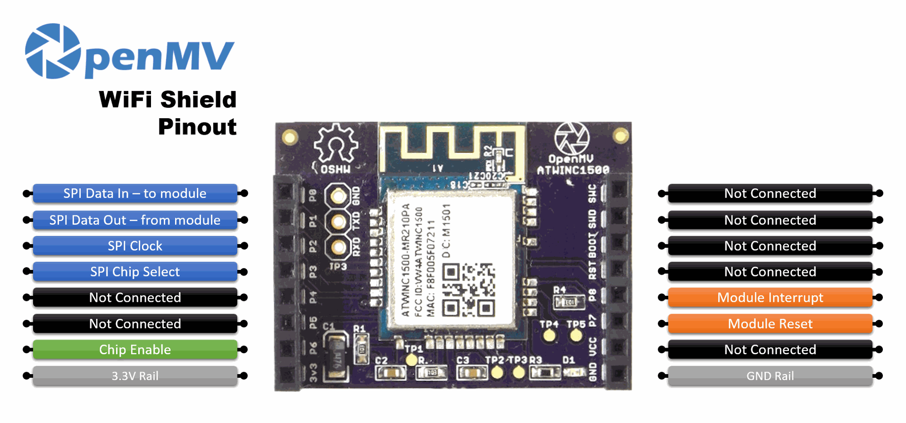

WiFi Shield¶
A WiFi Shield 2,4 GHz-es Wi-Fi-vel egészíti ki azokat az OpenMV Cam-eket, amelyek nem rendelkeznek fedélzeti hálózatkezeléssel, az Atmel WINC1500 modul segítségével. Bármely OpenMV Cam fejléc aljára csatlakoztatható.

A teljes adatlapot, fényképeket és a rendelési információkat lásd a WiFi Shield termékoldalán.
Megjegyzés
Csak az OpenMV Cam, M4, M7, H7 és H7 Plus modelleken támogatott.
Kiemelt jellemzők¶
2,4 GHz-es Wi-Fi b/g/n az Atmel WINC1500 modulon keresztül
TLS 1.2 hardveres titkosítás HTTPS / MQTTS protokollokhoz
Kiosztás¶
{kind=link}

Lábkiosztás¶
Láb |
Funkció |
|---|---|
P0 |
SPI MOSI — adat a WINC1500 modulhoz |
P1 |
SPI MISO — adat a WINC1500 moduljától |
P2 |
SPI órajel |
P3 |
SPI chipkiválasztás |
P6 |
Chip engedélyezése |
P7 |
Modul reset |
P8 |
Modul megszakítás |
3,3 V-os sín |
A WINC1500 modul tápellátása |
GND sín |
Közös föld |
Használat¶
A shieldet a network.WINC osztályon keresztül vezérelheted. Az alapértelmezett állomás módban csatlakozz egy Wi-Fi hálózathoz, és írd ki a hozzárendelt IP-címet:
import network
import time
SSID = "your-network"
KEY = "your-password"
wlan = network.WINC() # station mode by default
wlan.connect(SSID, KEY)
while not wlan.isconnected():
print("connecting...")
time.sleep_ms(1000)
print("Wi-Fi IP:", wlan.ifconfig()[0])
A shield Wi-Fi hozzáférési pontként is működhet — add át a MODE_AP értéket a konstruktornak, és hívd meg a start_ap() függvényt az AP elindításához:
import network
wlan = network.WINC(network.WINC.MODE_AP)
wlan.start_ap("openmv-cam", security=network.WINC.OPEN)
print("AP IP:", wlan.ifconfig()[0])
Megjegyzés
A WINC1500 AP-megvalósítása egyszerre csak egy klienst fogad el, és csak az OPEN és WEP biztonsági módokat támogatja.
A WINC1500 saját firmware-e a kamerából ellenőrizhető és frissíthető. A futó firmware verzióját az alábbi paranccsal írhatod ki:
import network
wlan = network.WINC()
print("Firmware version:", wlan.fw_version())
A legújabb stabil image (winc_19_7_6.bin) az OpenMV IDE részeként érkezik az <openmv-ide-install-dir>/share/qtcreator/firmware/WINC1500/ útvonalon, és csak az újabb ATWINC1500-MR210PB hardverrel kompatibilis. A flasheléshez másold a .bin fájlt a kamera SD-kártyájára, vedd ki a kártyát, hogy a FAT gyorsítótár kiürüljön, állítsd alaphelyzetbe a panelt, majd futtasd:
import network
wlan = network.WINC(mode=network.WINC.MODE_FIRMWARE)
wlan.fw_update("winc_19_7_6.bin")
Az fw_dump() ugyanígy olvassa vissza az aktuális image-et egy fájlba. A teljes metóduslistát lásd a network.WINC osztálynál.